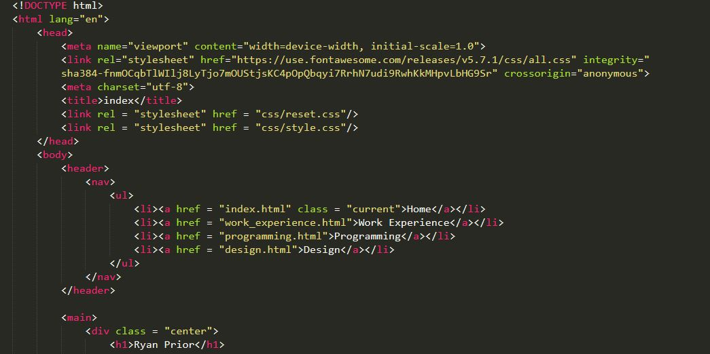
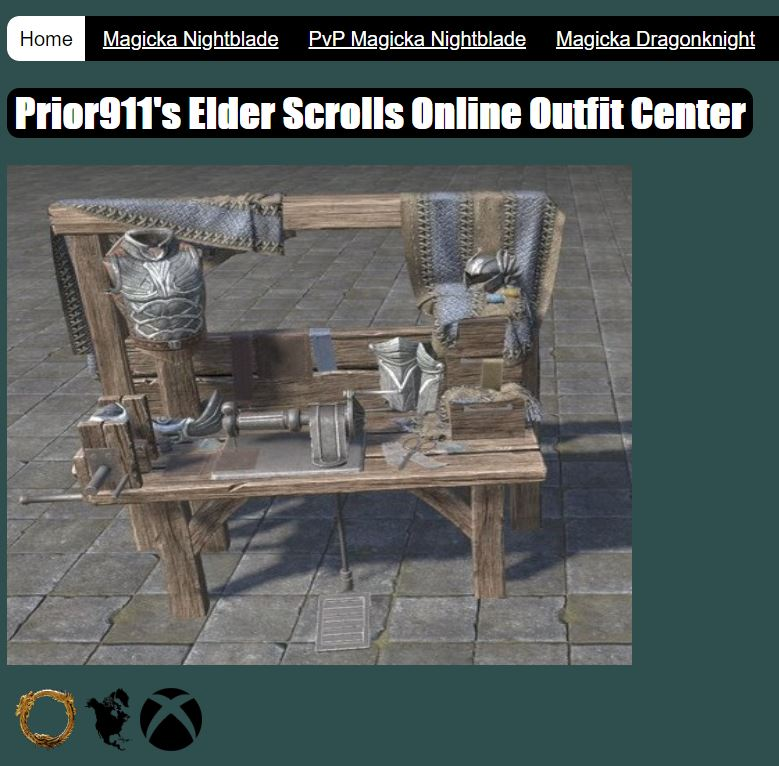
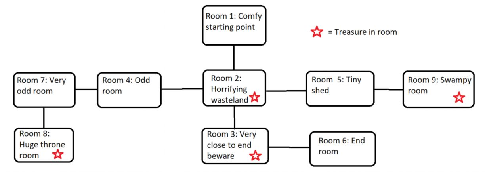
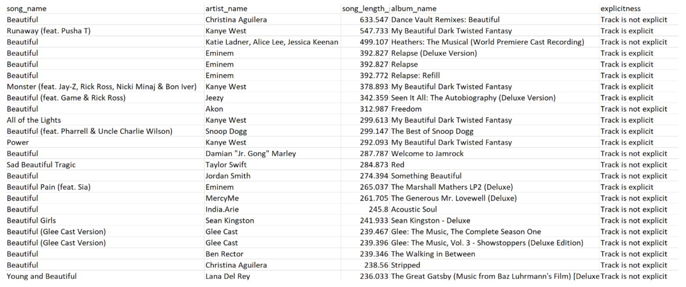

Programming
Portfolio Website
The website that you are currently looking at was created by me using HTML, CSS, and JavaScript. This project was meant to showcase not only my web development skills but also my ability to design aesthetically pleasing and usable products. The site has three different stylings for phones, tablets, and computer screens. As well it is free of any accesibility errors through Axe.
Creative Website

During my junior year at the University of Michigan I designed a website that is a creative work that is based on my favorite video game. The purpose and scope of this site was less about design and more about challenging myself to display a depth of coding knowledge through various HTML, CSS, and JavaScript methods. As well, the website passes Axe accessibility tests and has three different interfaces for phone, tablet, and computer screen.
Click here to view full siteAdventure Game
For this project I was tasked with using Python to create an adventure style game that would run as strictly words in the terminal. The picture above is a map of my thought process. The participant is asked to put in directional values such as N, S, E, and W. Hitting a wall results in losing a life and picking a direction with a room advances the player into that room. Stars on the map indicate treasure and treasure gives the player points. The player must reach the end room, after collecting 100 points, to win. The project focused a lot on the use of classes and creating instances.
Click here to view the project in GitHubAPI Data Manipulation
This work utilizes Python, the Twitter API and the iTunes API to first take a hashtag and find the last 200 tweets pertaining to the tag. Next, the code finds the most common word in those tweets. Transitioning over to the iTunes API, the most common word is plugged in and in return a file is written that has information on songs that contain the word in some capacity. The program then organizes the list by length of the songs. Above is a picture of the outcome after getting the last 200 tweets from the hashtag "love". The most frequent word in the example was "beautiful".
Click here to view the project in GitHub